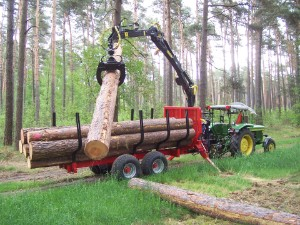
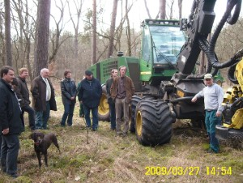

Wir über uns
Ein Forstbetrieb rund um den kleinen Ort Scharteucke, nördlich von Genthin im Jerichower Land. Bis Berlin sind es etwa 60 Kilometer.

Sandboden, Kiefern und sauberes Wasser
Wie der Name sagt, umgibt der Scharteucker Forst den Ort Scharteucke, der zur Stadt Jerichow gehört. Der Boden besteht vor allem aus Sand und bietet Eichen, Birken, Robinien und Kiefern eine gute Lebensgrundlage. Jährlich fallen rund 600 mm Niederschlag, also 600 Liter pro Quadratmeter, die mittlere Jahrestemperatur liegt bei 9 Grad.
Diese Bedingungen sind ideal für die Kiefer. Rund 70 Prozent des Bestands sind Kiefern in erstklassiger Qualität. Jährlich wachsen etwa 1.500 Kubikmeter Holz nach. Nicht mehr zu ernten, als nachwächst, ist die Grundlage unseres Handelns.
Neben der Forstwirtschaft dient der Wald der Trinkwassergewinnung für Genthin und die umliegenden Orte: Sechs Tiefbrunnen fördern täglich 1,9 Millionen Liter Trinkwasser.
Nachhaltig, ohne Kahlschlag, mit Rücksicht auf die Natur
Basis unseres Handelns sind die deutschen Gesetze und unsere eigenen Grundsätze. Bundeswaldgesetz und Landeswaldgesetz Sachsen-Anhalt verlangen Nachhaltigkeit: Es darf höchstens so viel geerntet werden, wie im Betrieb nachwächst.
Darüber hinaus arbeiten wir ohne Kahlschläge und verpflichten unsere Lohnunternehmer, ausschließlich biologisches Sägekettenöl und umweltschonende Arbeitsweisen einzusetzen.
Wenn Sie Holz aus dem Scharteucker Forst kaufen, haben Sie die Gewissheit, Natur und Klima nicht geschadet zu haben. Die Herkunft garantiert, dass es in gesunder Umgebung gewachsen und weder radioaktiv noch anders belastet ist.


Wussten Sie schon, dass …
Holz zählt zu den ältesten Baumaterialien überhaupt. Es ist stabil, langlebig und braucht kaum Pflege. Durch die Maserung ist jedes Stück einmalig, und es sorgt für ein angenehmes Raumklima.
… ein Kilogramm Holz fast den Heizwert von einem halben Liter Heizöl erreichen kann?
… Holz bei der Verbrennung nur das CO₂ freigibt, das es beim Wachsen gebunden hat? Die Klimabilanz bleibt neutral.
… es spezielle Feststoffkessel gibt, mit denen sich Zentralheizungen unkompliziert und bequem mit Holz befeuern lassen?
… der Pro-Kopf-Verbrauch an Holz in Deutschland bei rund einem Kubikmeter pro Jahr liegt?
… ein Kubikmeter Holz 800 bis 1.000 kg wiegen kann?
… ein junger Baum beim Wachsen relativ gesehen mehr Sauerstoff produziert und mehr CO₂ bindet als ein alter?
… in deutschen Wäldern mehr Holz nachwächst, als entnommen wird?
… nicht alle Länder per Gesetz nachhaltig wirtschaften müssen und manche deshalb Raubbau betreiben?
… Sie bei deutschem Holz eine sehr hohe Sicherheit haben, was Schadstoffe angeht?
… wir uns sehr freuen, wenn Sie unser Kunde werden?
Holz direkt aus dem Wald
Ob ein Raummeter Kaminholz, Bohlen nach Maß oder ganze Lkw-Ladungen Rundholz: rufen Sie uns an, wir beraten Sie gern.
Kontakt aufnehmen